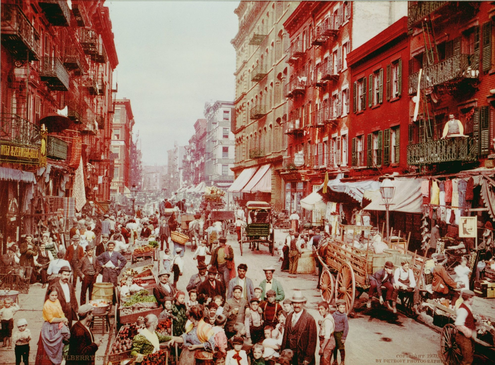

Research question
Do the endings of the 25 stories differ measurably from the rest of each story, and what does this reveal about how the surprise is built?

The last passages of O. Henry's The Four Million (1906)
Mulberry Street, New York City, about 1900. Photochrom print by Detroit Publishing Co., Library of Congress, Prints and Photographs Division. Public domain; cropped and tinted for this site.
Research question
Do the endings of the 25 stories differ measurably from the rest of each story, and what does this reveal about how the surprise is built?